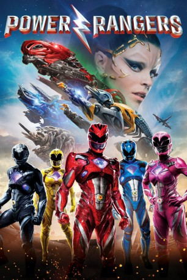

#6615 Power Rangers
 
 IMDB-Wertung: 6.0 / 10
IMDB-Wertung: 6.0 / 10  Metascore: 44
Metascore: 44 
Die Teenager Jason, Kimberly, Billy, Trini und Zack haben nichts miteinander zu tun, außer zufällig auf dieselbe Schule im Städtchen Angel Grove zu gehen. Doch eines Tages stoßen Jason und Billy auf etwas, das wie uralte Fossilien aussieht und erwecken damit versehentlich eine außerirdische Macht, die alle Menschen ausrotten will: Die Außerirdische Rita Repulsa plant dazu mit ihrer Alien-Armee einen Angriff auf die Erde. Doch unser Planet wird den Invasoren nicht schutzlos ausgeliefert sein, denn die fünf Freunde kommen durch den Zwischenfall mit den Fossilien auf unerklärliche Weise in den Besitz von Superkräften – sie werden Power Ranger! Wenige Tage bleiben, um unter Anleitung von Zordon dem Hologramm des einstigen Red Rangers, zu lernen, wie sie mit ihren neuen Kräften am besten umgehen…
Jahr: 2017
Dauer: 124 Minuten
FSK: 12
Land: USA Studio: LionsgateTonspuren: DD5.1 - ,
Untertitel: Deutsch,
Auflösung: 1080p (1920x804) Größe: 8089 MB
Genre: Action, Sci-Fi, Abenteuer
Regisseur: Dean Israelite
Drehbuch: John Gatins
Soundtrack:
Darsteller:
- Dacre Montgomery als Jason, Red Ranger
 Naomi Scott als Kimberly, Pink Ranger
Naomi Scott als Kimberly, Pink Ranger- RJ Cyler als Billy, Blue Ranger
- Ludi Lin als Zack, Black Ranger
- Becky G. als Trini, Yellow Ranger
 Elizabeth Banks als Rita Repulsa
Elizabeth Banks als Rita Repulsa Bryan Cranston als Zordon
Bryan Cranston als Zordon Bill Hader als Alpha 5
Bill Hader als Alpha 5- Matt Shively als Damo
- Cody Kearsley als Hawkeye
 David Denman als Sam Scott
David Denman als Sam Scott Robert Moloney als Ted Hart
Robert Moloney als Ted Hart- Anjali Jay als Maddy Hart
- Sarah Grey als Amanda
- Morgan Taylor Campbell als Harper
- Caroline Cave als Beverly Scott
- Kayden Magnuson als Pearl Scott
- Lisa Berry als Candace Cranston
 Wesley MacInnes als Bully
Wesley MacInnes als Bully John Stewart als Detention Teacher
John Stewart als Detention Teacher- Fiona Fu als Zack's Mom
- Clayton Chitty als Young Cop
- Kenneth Tynan als Freak
- Amitai Marmorstein als Geek
 Garry Chalk als Captain Bowen
Garry Chalk als Captain Bowen- Donald Adams als Homeless Man
 Patrick Sabongui als Trini's Dad
Patrick Sabongui als Trini's Dad Erica Cerra als Trini's Mom
Erica Cerra als Trini's Mom Emily Maddison als Young Lover #1
Emily Maddison als Young Lover #1- Drew Tanner als Young Lover #2
 Fiona Vroom als Fenix Saleswoman / Yellow Ranger, Prologue
Fiona Vroom als Fenix Saleswoman / Yellow Ranger, Prologue- Jason David Frank als Cameo Role #1
- Amy Jo Johnson als Cameo Role #2
- Quinton Vick als Detention Student #1
- Mykel Jay Barcera als Detention Student #5
 Fred Tatasciore als Goldar / Putties
Fred Tatasciore als Goldar / Putties- Andrew Beha als Police Officer , uncredited
- Jaime M. Callica als Officer Bebe , uncredited
- Tanis Dolman als Pedestrian , uncredited
- Angelo Renai als Pastor , uncredited
- Ranjit Samra als Security Guard , uncredited
- Austin Obiajunwa als Random Kid
- Enrique Dante Miles Lopez als Twin #1
- Jackson Croom als Twin #2
- Keenan Cicero Reynolds als Twin #2
- Sharon Simms als Green Ranger, Prologue
- Sophie Lui als Television Anchor
- Phillip Reed als Heavy Equipment Operator
- Lea Matina als Detention Student #2
- Kayanna Jacobsen als Detention Student #3
Datei: X:\2017(N-Z)\Power Rangers (2017, FSK12, 1920x804).mkv seit 25.07.2017
Festplatte: HD 2017(A-Z)-2018(A-F)
 Es gibt insgesamt 170 Filme in der Gruppe '2017(N-Z)'
Es gibt insgesamt 170 Filme in der Gruppe '2017(N-Z)'